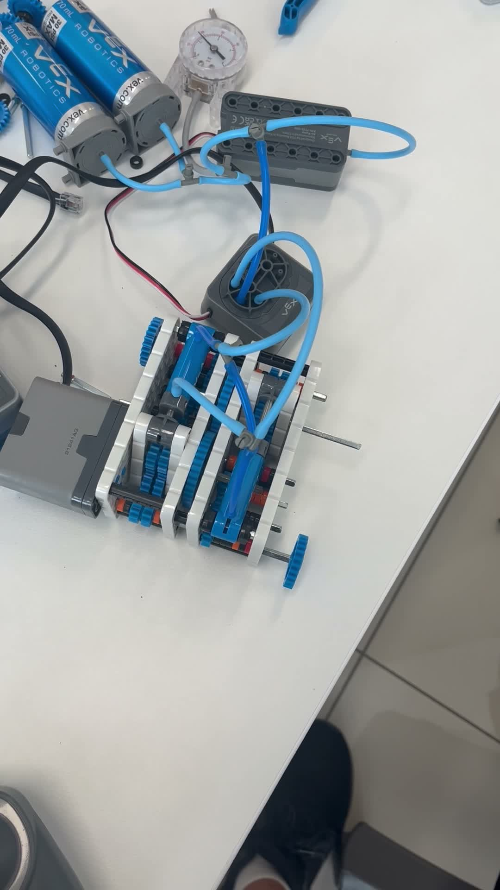
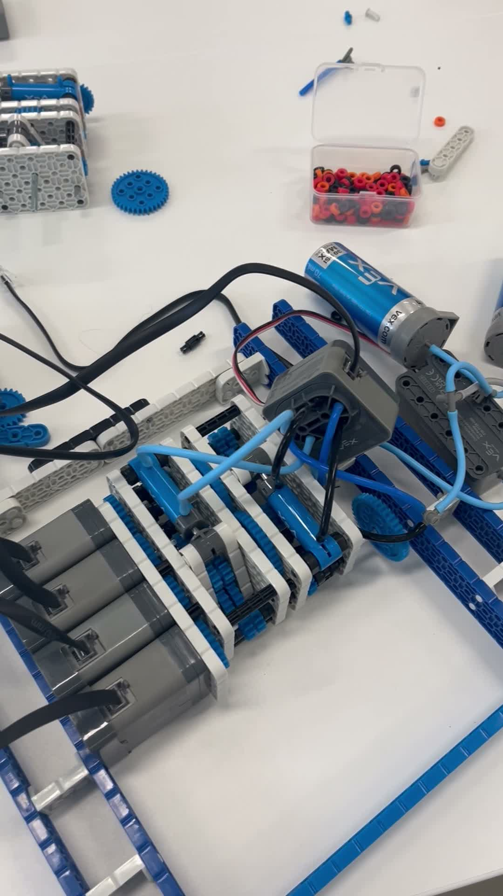
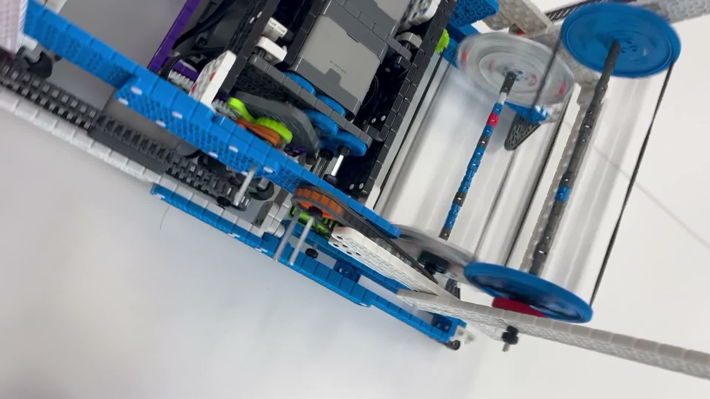
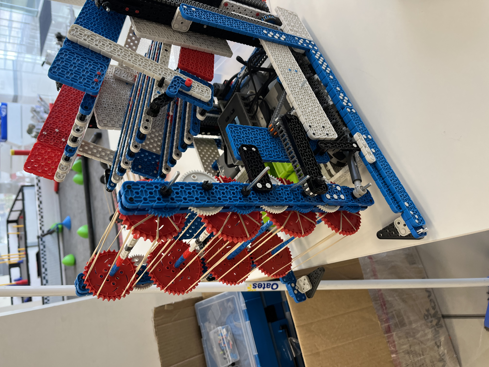

Team 4613B
VEX IQ
Full Volume season - a Barker League tournament win and a top-6.4% finish at the 2024 VEX Robotics World Championship.

My first competitive robotics, with 4613B Barker Redbacks in the Full Volume season (2023-24). I was interested in power transfer from the start: one motor driving more than one mechanism.
- 1stBarker League tournament
- 27 / 420at the 2024 World Championship
- Top 6.4%at Worlds
- 164teamwork score, #61 worldwide
Power transfer
I built several pneumatic power take-off (PTO) systems on VEX IQ parts. One motor could drive more than one mechanism without extra weight.



This idea came back years later in the gravity ratchet on Switch.
Barker League VIQC
On 17 October 2023 we won the tournament outright out of 34 teams. Awards: Teamwork Champion, Robot Skills Champion, and a 90-point high score.

VEX Robotics World Championship
4613B qualified for Worlds in Dallas, one of 420 teams in the Middle School division. We finished 27th of 420, with a qualification average of 113.5, inside the top 6.4%. Our best teamwork score was 164, #61 worldwide.